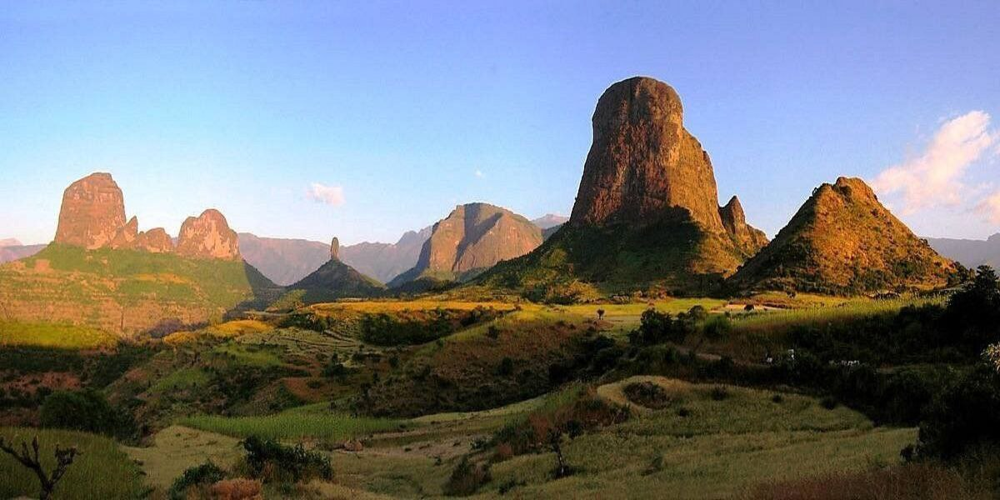
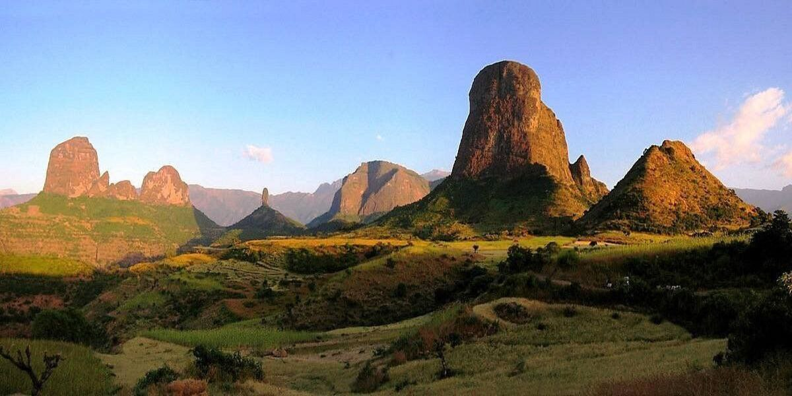

Embarking on a trek to Ras Dashen's summit offers an unforgettable journey through Ethiopia's breathtaking Simien Mountains. Starting from the national park, hikers traverse deep valleys and rugged escarpments, passing through remote highland villages. The ascent to 4,550 meters (14,928 feet) unfolds over several days, revealing rare wildlife like the Gelada monkey and Walia ibex. Along the way, trekkers experience the rich culture of local communities and panoramic vistas of the Ethiopian Highlands. This adventure combines physical challenge with cultural immersion and natural beauty, culminating in the rewarding achievement of reaching Ethiopia's highest point.
 

Ras Dashen
Discover Ethiopia’s highest peak and natural wonders
Trekking to the Summit
Location Map
Flora and Fauna
Gelada Monkey
Easily recognized by the red patch on its chest,Gelada is a grass-eating primate found only in Ethiopian Highlands. It lives in large groups and thrives in high-altitude grasslands.
Walia Ibex
The Walia Ibex is a rare wild goat seen only in the Simien Mountains. With long, curved horns, it gracefully climbs rocky cliffs and symbolizes the area's rugged terrain.
Ethiopian Wolf
Also called the Simien fox, the Ethiopian wolf is the rarest canid in Africa. It hunts rodents in alpine meadows and is found at elevations above 3,600 meters.
Best Time to Visit
The optimal period to explore the Simien Mountains is during the dry season, from October to March. During these months, the weather is generally clear and conducive to trekking. However, temperatures can vary significantly between day and night, so layered clothing is advisable.
Local Culture
Traditional Clothing
Highland communities wear layered wool cloaks and woven hats for warmth, often handmade from local materials and uniquely patterned.
Local Cuisine
Injera, a sour flatbread, is served with colorful vegetable, wot and lentil stews, reflecting Ethiopia’s rich flavors and communal dining tradition.
Stone-Round Houses
Circular stone huts with thatched roofs are typical in the Simien highlands, built to withstand cold climates and blend with the landscape.
Plan Your Adventure
Ready to experience the wonders of the Simien Mountains? Whether you're interested in challenging treks, cultural immersion, or wildlife observation, our team is here to help you plan an unforgettable journey.